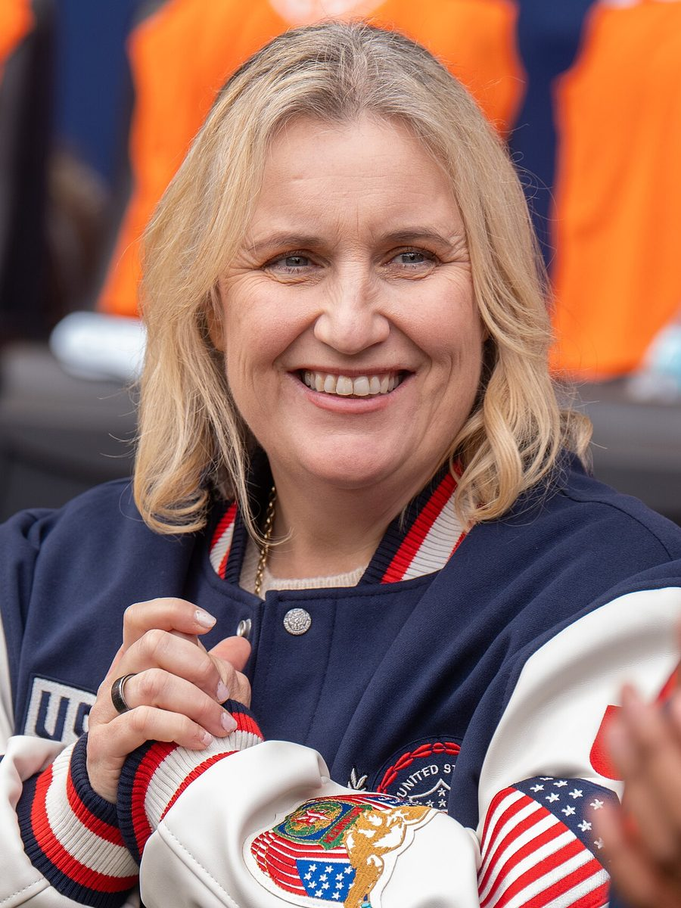

足球
虽败犹荣！U17世界杯首秀越南2-3憾负比利时，两记神仙球惊艳多哈
黎士伯精妙脚后跟建功、朱玉阮力角球直接破门，越南队在多哈给欧洲亚军制造巨大麻烦

格斗
UFC卡塔尔站头条主赛称重过关：普罗哈兹卡与斯特林双双达标
两人在多哈均称出205磅，周六即将在阿提亚竞技场展开轻重量级焦点对决。

人物故事
从达吉斯坦群山到29胜0负传奇：哈比卜·努尔马戈梅多夫的完美综合格斗之路
在父亲阿卜杜勒马纳普的毕生指引下，这位轻量级霸主统治了UFC八角笼，并在巅峰之际兑现承诺挂拳退役。

格斗
拒绝2亿美元诱惑！小鹰哈比卜斩钉截铁拒绝杰克·保罗的复出提议
这位保持全胜战绩的前UFC轻量级冠军坚称金钱无法激起他的战意，再次重申绝不复出。

足球
柴桢4-1横扫泰港重燃出线希望，东盟俱乐部锦标赛迎首胜
敏拉塔纳克、马丁斯·儒尼奥尔、蒂亚戈·阿尔维斯与佩普拉相继建功，柬埔寨冠军主场大胜锁定B组关键3分
头条

历史上的今天
历史上的今天｜2022年卡塔尔世界杯启幕：中东足球翻开历史新篇
恩纳·瓦伦西亚揭幕战梅开二度，开启为期29天的冬季足球盛宴，最终见证创纪录的172粒进球与阿根廷三星加冕。

足球
海耶斯公布美国女足23人大名单，全力出击世界杯预选赛
11月27日若能在八强战中击败萨尔瓦多，美国队将直接锁定2027年巴西女足世界杯入场券。

冰球
斯巴达克与冶金工人交换四名前锋 马尔采夫和莫罗佐夫转投马格尼托哥尔斯克
莫斯科斯巴达克将米哈伊尔·马尔采夫和伊万·莫罗佐夫的签约权送往冶金工人，换来鲁斯兰·伊斯哈科夫、伊戈尔·涅恰耶夫、后卫弗谢沃洛德·科马罗夫的签约权以及经济补偿。

足球
巴拉圭搅局森保一告别战 日本1比2负于对手
胡安·何塞·卡塞雷斯和古斯塔沃·戈麦斯在新加坡国家体育场为巴拉圭破门，福田师王终场前的头球未能扭转局面。这是森保一执教日本队的第113场、也是最后一场比赛。

冰球
米奇科夫两次助攻帮助费城飞人4比3险胜布法罗军刀 连续得分场次增至五场
21岁的俄罗斯小将为杰米·德赖斯代尔和克里斯蒂安·德沃夏克的进球送出助攻，德沃夏克第三节的进球成为制胜球。

格斗
爱尔兰拳手李·里夫斯去世，年仅31岁 三个月前在都柏林比赛中受伤
里夫斯8月被加里·卡利击倒，此后在医学诱导昏迷中度过三个月。他的推广公司Queensberry称他是社区的榜样和激励。